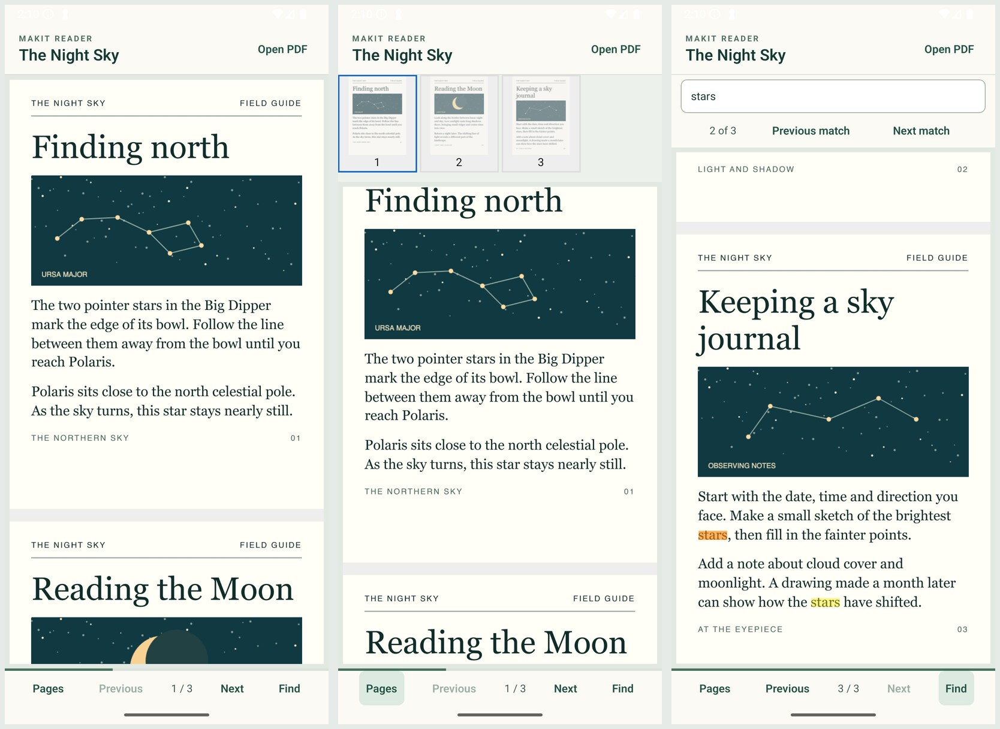

A native place for PDFs.
Continuous or paged reading, zoom, rotation and page fitting. No embedded web page on native.
Embed a manual or field guide in your app. Readers can find a phrase, follow highlighted matches and jump between pages while the file stays on their device.
MIT licensed · No WebView · No document upload
@makit-kit/react-native-pdf on npm

Bring your own file handling and application state. The reader takes care of the document.
Continuous or paged reading, zoom, rotation and page fitting. No embedded web page on native.
Search the existing text layer in the background. Navigate matches and highlight what matters.
Page metadata and lazy thumbnails from a shared document session, with a bounded JavaScript cache.
Open The Night Sky in the Web playground. Choose Find, search for stars and move through three highlighted passages. Choose Pages to jump to a chapter by its thumbnail.
React Native CLI or an Expo development build. Start with the sample, then bring your own local document.
Set up Expoimport { PdfReader } from
'@makit-kit/react-native-pdf';
<PdfReader
sourceUri={localFileUri}
style={{ flex: 1 }}
onPageChanged={(page, total) =>
savePosition(page)
}
/>The library reads local documents. Your app handles downloads, permissions and storage. No OCR, analytics or hidden network fallback.